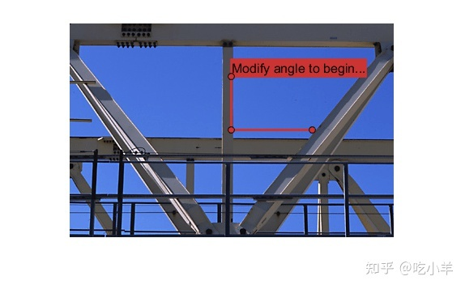

Home
此示例说明如何创建一个交互式工具，用于显示折线 ROI 中三个顶点之间的角度。
您可以通过单击并拖动折线顶点来更改角度。当 ROI 移动时，它会广播一个名为 MovingROI 的事件。通过为该事件添加一个监听器和一个在事件发生时执行的回调函数，该工具可以实时测量和显示角度的变化。
显示图像和折线 ROI
读取并显示图像。
im = imread('gantrycrane.png');
imshow(im)
获取图像的大小。
[y,x,~] = size(im);
获取图像中心的坐标。该示例将角度测量工具的顶点放置在图像的中心。
midy = ceil(y/2); midx = ceil(x/2);
指定折线 ROI 中第一个点的坐标。本示例将折线中的第一个点直接放置在图像中心上方。
firstx = midx; firsty = midy - ceil(y/4);
指定折线 ROI 中第三个点的坐标。本示例将折线中的第三个点直接放置在图像中心的右侧。
lastx = midx + ceil(x/4); lasty = midy;
创建一个空的上下文菜单来替换默认菜单。
c = uicontextmenu;
在图像上以红色绘制多段线。指定三个顶点的坐标，并添加带有说明的标签以便与折线交互。
h = drawpolyline("Parent",gca, ...
"Position",[firstx,firsty;midx,midy;lastx,lasty], ...
"Label","Modify angle to begin...", ...
"Color",[0.8,0.2,0.2], ...
"UIContextMenu",c);

添加侦听 ROI 移动的侦听器。当侦听器检测到移动时，它会调用自定义回调函数updateAngle。此自定义函数在下文“使用回调函数更新角度标签”中定义。
addlistener(h,'MovingROI',@(src,evt) updateAngle(src,evt));
折线 ROI 还支持交互式添加和删除顶点。但是，角度测量工具在任何时候都需要恰好三个顶点，因此顶点的添加和删除是与 ROI 的不良交互。添加侦听添加或删除顶点的侦听器。当您尝试更改顶点数时，相应的侦听器会调用自定义回调函数来抑制更改。这些自定义函数：storePositionInUserData和recallPositionInUserData，在下文“使用回调函数防止添加或删除顶点”中定义。
addlistener(h,'AddingVertex',@(src,evt) storePositionInUserData(src,evt)); addlistener(h,'VertexAdded',@(src,evt) recallPositionInUserData(src,evt)); addlistener(h,'DeletingVertex',@(src,evt) storePositionInUserData(src,evt)); addlistener(h,'VertexDeleted',@(src,evt) recallPositionInUserData(src,evt));
使用回调函数更新角度标签
定义在折线 ROI 移动时执行的回调函数。此函数检索三个顶点的当前位置，计算顶点之间的角度（以度为单位），并更新标签以显示当前旋转角度。
function updateAngle(src,evt)
% Get the current position
p = evt.CurrentPosition;
% Find the angle
v1 = [p(1,1)-p(2,1), p(1,2)-p(2,2)];
v2 = [p(3,1)-p(2,1), p(3,2)-p(2,2)];
theta = acos(dot(v1,v2)/(norm(v1)*norm(v2)));
% Convert the angle to degrees
angleDegrees = (theta * (180/pi));
% Update the label to display the angle
src.Label = sprintf('(%1.0f) degrees',angleDegrees);
end
使用回调函数防止添加或删除顶点
定义在侦听器检测到“AddingVertex”或“DeletingVertex”事件时执行的回调函数。这些事件发生在感兴趣的顶点添加到折线或从折线中删除之前。将当前的三个多段线顶点存储在UserData属性中。
function storePositionInUserData(src,~)
src.UserData = src.Position;
end
定义在侦听器检测到“VertexAdded”或“VertexDeleted”事件时执行的回调函数。这些事件发生在感兴趣的顶点添加到折线或从折线中删除后。恢复UserData属性中存储的三个多段线顶点集。
function recallPositionInUserData(src,~)
src.Position = src.UserData;
end
======================================================================
我的测试结果及程序
下面是我测试的代码：

注：本文根据MATLAB官网内容修改而成。